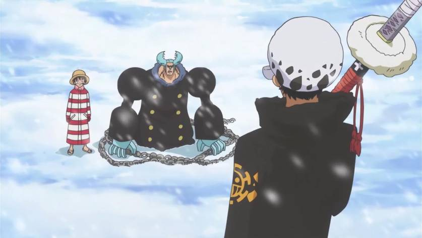

Vinte e dois anos antes do início da história, o Rei dos Piratas, Gol D. Roger, foi executado. No
entanto,
antes de sua morte, ele revelou a todos que seu tesouro, o One Piece, estava escondido no final da
Grand
Line. Isso inspirou as pessoas a se tornarem piratas e navegarem em direção ao tesouro, iniciando a
Grande Era dos Piratas. Doze anos depois, um menino do East Blue chamado Monkey D. Luffy sonhou em
encontrar o One Piece, mas perdeu a habilidade de nadar depois de comer uma Akuma no Mi, o que lhe
deu a capacidade de esticar o corpo como borracha. Ele recebeu um chapéu de palha do pirata Shanks,
que mais tarde se tornaria um Yonkou, um dos quatro piratas mais poderosos do mundo. Luffy fez a
promessa de que devolveria o chapéu assim que se tornasse um pirata e superasse Shanks.
East blue/Alabasta
Imagem referente a saga de Alabasta.
Mais dez anos se passaram e Luffy partiu para o mar aos 17 anos. Sua infâmia começou a crescer quando
ele formou os Piratas do Chapéu de Palha e derrotou alguns dos piratas mais notórios do East Blue.
Ele
recrutou quatro tripulantes: Roronoa Zoro, combatente que buscava se tornar o maior espadachim do
mundo, Usopp, atirador que buscava se tornar um bravo guerreiro do mar, Sanji, cozinheiro que
buscava
encontrar um mar escondido conhecido como All Blue, e Nami, navegadora que sonhava em desenhar
um mapa-múndi. Luffy entrou na Grand Line com uma recompensa de
30,000,000 por sua cabeça e foi
perseguido por Smoker, capitão da Marinha. Na Grand Line, ele e sua tripulação se envolveram em uma
conspiração para desmantelar a organização criminosa Baroque Works, liderada por Crocodile, até
então
membro dos Shichibukai, sete piratas que trabalham para o Governo Mundial. Os Chapéus de Palha
derrotaram Crocodile e destruíram a Baroque Works, chamando a atenção de oficiais de alto escalão do
Governo Mundial. Eles ganharam dois companheiros de tripulação no processo, Tony Tony Chopper,
médico que buscava curar todas as doenças, e a misteriosa Nico Robin, arqueóloga que anteriormente
era a segunda no comando da Baroque Works.
Skypiea/Water7/Enies Lobby
Imagem referente a saga de Enies lobby.
Os Chapéus de Palha continuaram navegando pela Grand Line, chegando a se aventurar em uma ilha no
céu, Skypiea, onde enfrentaram o governante ditador do país, Enel, e também presenciaram a luta de
400 anos entre os skypieans e os shandians, na busca pelo controle do Upper Yard, a terra natal da
Tribo Shandia. De volta ao mar azul, as condições fizeram com que seu navio, o Going Merry, sofresse
danos irreparáveis. Além disso, Robin se entregou ao governo para salvar a tripulação de ser
aniquilada. No entanto, Luffy e os outros se recusaram a deixá-la ir e invadiram a ilha judiciária
Enies Lobby, derrotando o poderoso grupo de assassinos do governo conhecido como CP9. Durante a
batalha, foi revelado que Robin procurava descobrir os 100 anos perdidos de história que o Governo
Mundial não quer que sejam revelados. Os Chapéus de Palha conseguiram resgatar Robin, mas o Going
Merry foi finalmente destruído depois que eles escaparam. No entanto, eles ganharam um novo
companheiro de tripulação, Franky, carpinteiro naval que queria construir um navio que fosse capaz
de dar a volta ao mundo, e ele construiu o Thousand Sunny, novo navio da tripulação. A destruição de
Enies Lobby fez com que os Chapéus de Palha fossem vistos como uma ameaça ainda maior, e cada membro
da tripulação recebeu uma recompensa.
Thriller Bark/Sabaody
Imagem referente a saga de Thriller Bark.
Os Chapéus de Palha navegaram para o Florian Triangle, onde encontraram Brook, um esqueleto que
queria se reunir com Laboon, uma baleia de quem sua antiga tripulação era amiga há muitas décadas.
Os Chapéus de Palha derrotaram outro Shichibukai, Gecko Moria, e Brook se juntou a seu time.
Enquanto isso, um pirata conhecido como Barba Negra capturou Portgas D. Ace, irmão adotivo de Luffy,
e o entregou ao governo para ser executado. Os Chapéus de Palha foram para o Arquipélago de Sabaody,
ao lado de outros nove piratas com recompensas acima de
100,000,000, que juntos de Luffy e
Zoro ficaram conhecidos como Onze Supernovas. No entanto, o caos eclodiu devido a Luffy socar um
Nobre Mundial. O Shichibukai Bartholomew Kuma e as réplicas ciborgues de si mesmo dominaram os
Chapéus de Palha e Kuma os enviou voando para diferentes ilhas ao redor do mundo. Separado de sua
tripulação, Luffy descobriu sobre a execução iminente de Ace e decidiu ir salvá-lo antes de se
reunir com seus amigos outra vez.
Impel Down/Marineford
Imagem referente a guerra de marineford.
Luffy conseguiu invadir Impel Down, a principal prisão do governo, mas não conseguiu chegar a Ace a
tempo. Ele então liderou uma fuga em massa e os outros prisioneiros o ajudaram a chegar a
Marineford, onde Ace seria executado. A guerra estourou em Marineford quando Barba Branca, um dos
Yonkou e capitão de Ace, liderou sua tripulação em uma batalha contra a Marinha, e mais tarde Luffy
e os prisioneiros de Impel Down se juntaram a eles. Foi então revelado ao mundo que Luffy era filho
de Monkey D. Dragon, o líder do Exército Revolucionário que busca derrubar o Governo Mundial; também
foi revelado, para grande choque do mundo inteiro, que Ace era filho de Gol D. Roger, o falecido Rei
dos Piratas e esse era o principal motivo para ele estar sendo condenado a morte. Luffy conseguiu
libertar Ace, mas Ace foi morto após salvar Luffy do Almirante Akainu. Luffy, desmaiado, foi
retirado do campo de batalha enquanto Barba Branca segurava os marinheiros. De repente, Barba Negra
chegou com sua tripulação, matou Barba Branca e tomou seu poder de Akuma no Mi. Shanks então chegou
e acabou com a guerra.
Angustiado por sua incapacidade de salvar Ace, Luffy enviou uma mensagem para sua tripulação
dizendo-lhes para treinar e ficarem mais fortes por dois anos.
Ilha dos Homens-Peixe/Aliança Pirata

Imagem referente a aliança pirata.
Dois anos depois, os Chapéus de Palha retornaram a Sabaody e entraram no Novo Mundo, a segunda metade
da Grand Line. No Novo Mundo, eles formaram uma aliança com Trafalgar Law, um dos Onze Supernovas,
que buscava derrubar um dos Yonkou, Kaidou das Feras. Eles viajaram por Punk Hazard e Dressrosa para
destruir as fábricas que forneciam Akuma no Mi artificiais para Kaidou, e derrubaram o Shichibukai
Donquixote Doflamingo no processo. A tripulação também se envolveu com os Piratas da Big Mom, que
levaram Sanji para um casamento político. Os Chapéus de Palha e seus aliados resgataram Sanji com
sucesso, e Jinbe, um homem-peixe e ex-Shichibukai cujo sonho era alcançar a paz entre humanos e
homens-peixe, juntou-se à tripulação.
Yonkou/Imperadores
Imagem referente saga do Yonkou.
Eles seguiram então para o País de Wano, onde Kaidou tinha se estabelecido há 20 anos, trazendo fome
e miséria para os moradores. Big Mom, uma dos Yonkou, também veio para Wano atrás de vingança contra
Luffy, e se aliou a Kaidou. Na noite do Festival do Fogo, Luffy decretou uma guerra total no país, a
fim de derrotar Kaidou e seu exército, iniciava-se assim o Ataque à Onigashima. Após a aliança
vencer Kaidou e Big Mom, Luffy foi considerado um Yonkou também, o que fez sua recompensa dobrar de
1,5 bilhão para 3 bilhões.
Egg Head (saga atual)
Imagem referente saga de Egg Head.
Atualmente, os Chapéus de Palha estão em Egg Head, a Ilha do Futuro, onde se envolveram em um
incidente com Dr. Vegapunk, cientista genial que o Governo Mundial decidiu assassinar por estar
pesquisando sobre o Século Perdido. A situação está tomando a forma de uma guerra gigantesca
envolvendo os Piratas do Chapéu de Palha, Vegapunk, a Marinha e o Governo Mundial como um só,
estabelecendo assim o Incidente de Egg Head, cujas consequências irão chocar o mundo.